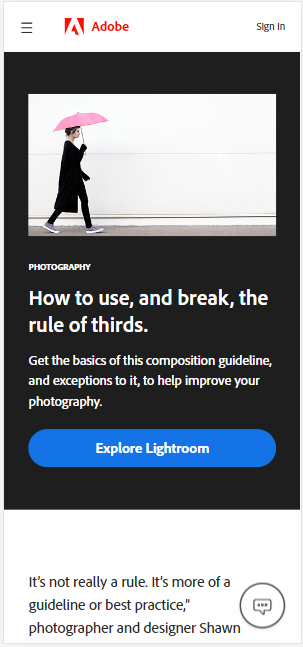

The rule of thirds
adobe.com
The rule of thirds is a composition guideline that places your subject in the left or right third of an image, leaving the other two thirds more open. While there are other forms of composition, the rule of thirds generally leads to compelling and well-composed shots.
Constrast
interaction-design.org
Hick’s Law is a simple idea that says that the more choices you present your users with, the longer it will take them to reach a decision. It’s common sense, but often neglected in the rush to cram too much functionality into a site or application. As a designer, you will use Hick’s Law to examine how many functions you should offer at any part of your website and how this will affect your users’ overall approach to decision making.
Visual Hierarchy
interaction-design.org

Visual hierarchy is the principle of arranging elements to show their order of importance. Designers structure visual characteristics—e.g., menu icons—so users can understand information easily. By laying out elements logically and strategically, designers influence users’ perceptions and guide them to desired actions.